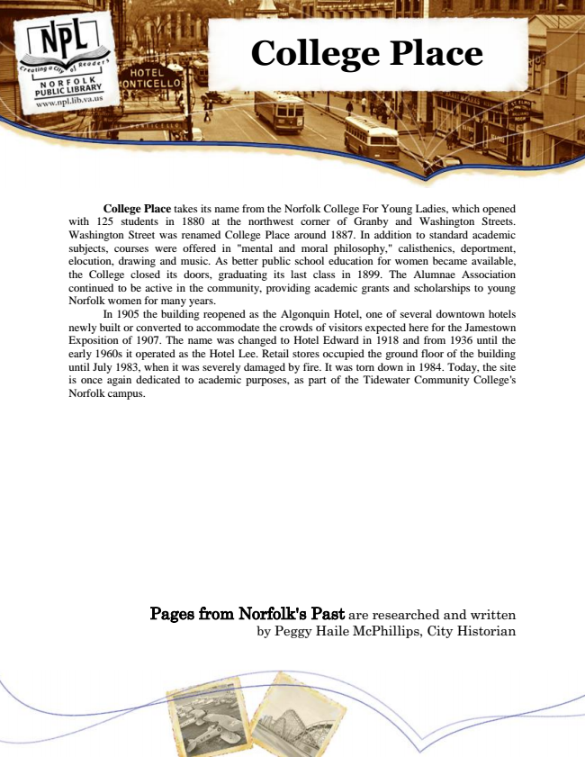

College Place
College Place takes its name from the Norfolk College For Young Ladies, which opened with 125 students in 1880 at the northwest corner of Granby and Washington Streets. Washington Street was renamed College Place around 1887. In addition to standard academic subjects, courses were offered in "mental and moral philosophy," calisthenics, deportment, elocution, drawing and music. As better public school education for women became available, the College closed its doors, graduating its last class in 1899. The Alumnae Association continued to be active in the community, providing academic grants and scholarships to young Norfolk women for many years.
In 1905 the building reopened as the Algonquin Hotel, one of several downtown hotels newly built or converted to accommodate the crowds of visitors expected here for the Jamestown Exposition of 1907. The name was changed to Hotel Edward in 1918 and from 1936 until the early 1960s it operated as the Hotel Lee. Retail stores occupied the ground floor of the building until July 1983, when it was severely damaged by fire. It was torn down in 1984. Today, the site is once again dedicated to academic purposes, as part of the Tidewater Community College's Norfolk campus.
Pages from Norfolk's Past are researched and written by Peggy Haile McPhillips, City Historian